CRVI000038John Cage - Early Electronic And Tape Music
Designed by Mountain · Sub Rosa · 2014
Designed by Mountain · Sub Rosa · 2014

CRVI000035Lee Bannon - Fantastic Plastic
Artwork by Lazerus Pit · 2012
Artwork by Lazerus Pit · 2012

CRVI000052Com Truise - Galactic Melt
Artwork by Seth Haley · 2011
Artwork by Seth Haley · 2011

CRVI000051Tycho - Epoch
Designed by Scott Hansen · 2017
Designed by Scott Hansen · 2017

CRVI000191Unknown - Confused
Reaction GIF · Winona Ryder at the 2017 SAG Awards · 67 frames, 4.5s loop · 2017
Reaction GIF · Winona Ryder at the 2017 SAG Awards · 67 frames, 4.5s loop · 2017
CRVI000189Unknown - Nope
Reaction GIF cut from TMZ footage · Rihanna leaving a club · 49 frames, 3.9s loop · 2014
Reaction GIF cut from TMZ footage · Rihanna leaving a club · 49 frames, 3.9s loop · 2014
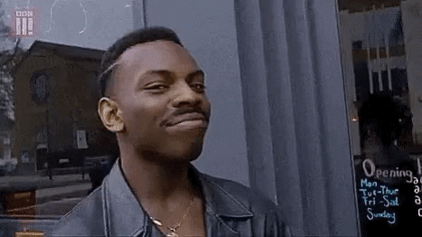
CRVI000204Unknown - Roll Safe
Reaction GIF · Kayode Ewumi as Reece Simpson · 21 frames, 1.1s loop · 2016
Reaction GIF · Kayode Ewumi as Reece Simpson · 21 frames, 1.1s loop · 2016

CRVI000071David Kanaga - Dyad OGST
Designer unknown · Software · 2013
Designer unknown · Software · 2013
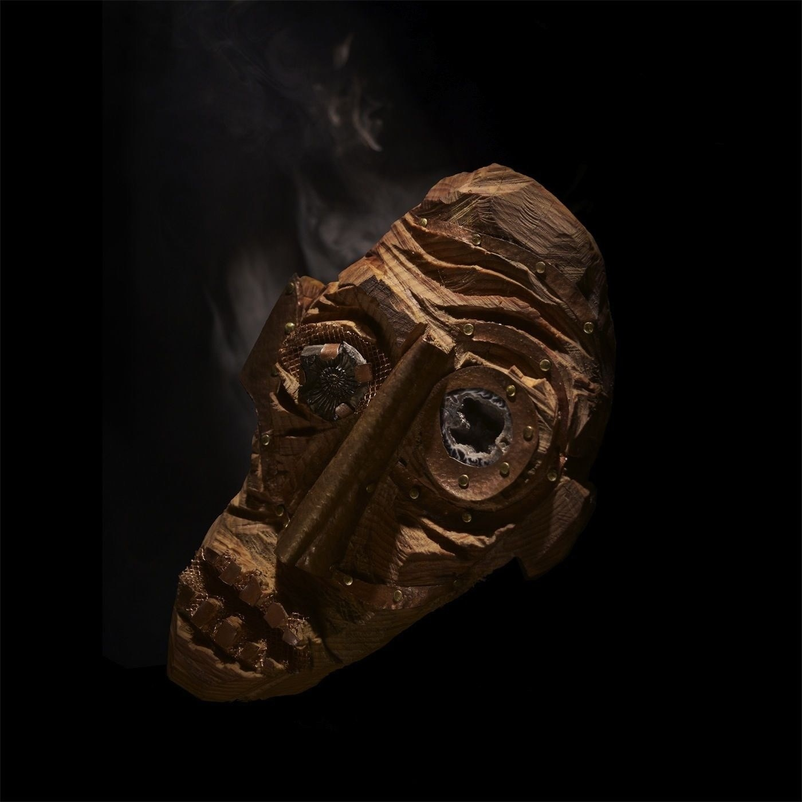
CRVI000076Herva - Kila
Designer unknown · 2015
Designer unknown · 2015
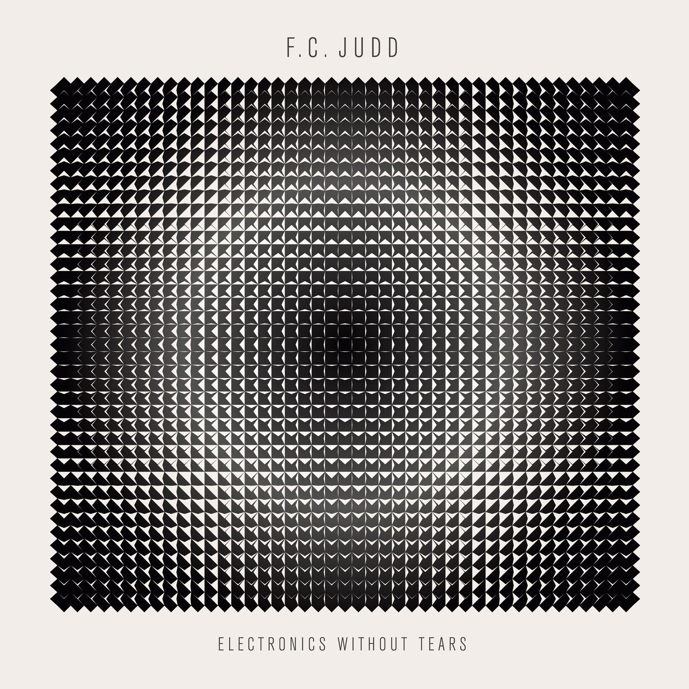
CRVI000074F.C. Judd - Electronics Without Tears
Designer unknown · Public Information · 2012
Designer unknown · Public Information · 2012

CRVI000062Reliq - Minority Report
Artwork by Tomokazu Matsuyama · Noble · 2011
Artwork by Tomokazu Matsuyama · Noble · 2011
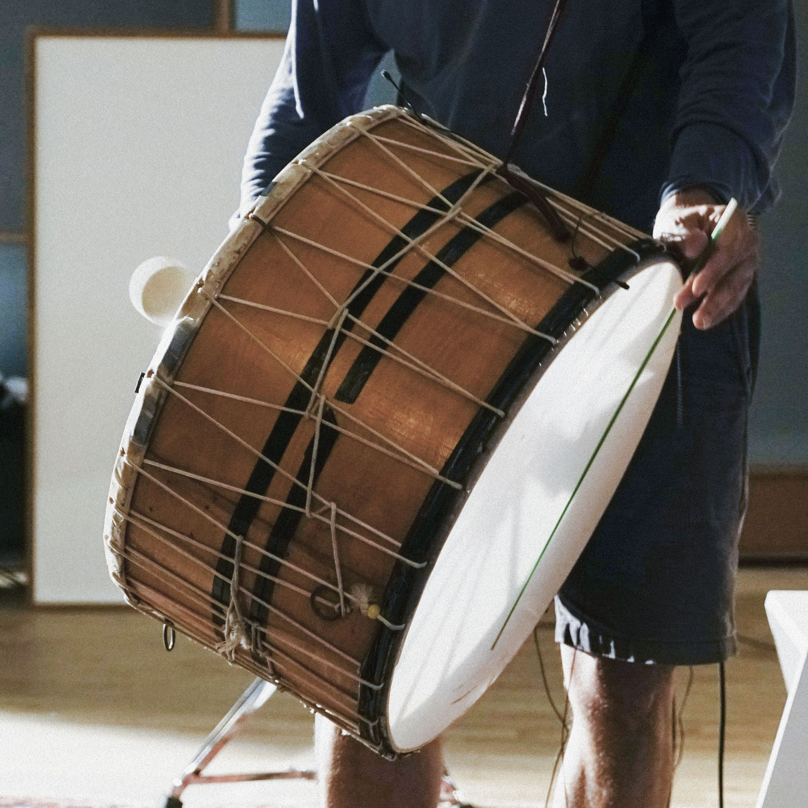
CRVI000027Cevdet Erek - Davul
Designed by John Coulthart · 2017
Designed by John Coulthart · 2017
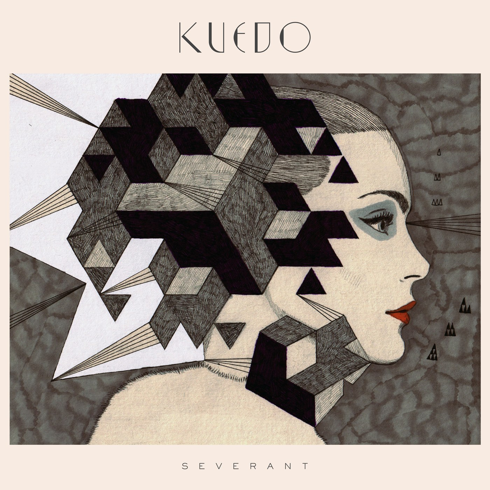
CRVI000083Kuedo - Severant
Designer unknown · Planet Mu · 2011
Designer unknown · Planet Mu · 2011

CRVI000048Oneohtrix Point Never - R Plus Seven
Designed by Robert Beatty · Warp Records · 2013
Designed by Robert Beatty · Warp Records · 2013

CRVI000073Event Cloak - Life Strategies
Designer unknown · 2017
Designer unknown · 2017

CRVI000012Foodman - Ez Minzoku
Artwork by Ellen Thomas, Keith Rankin · 2017
Artwork by Ellen Thomas, Keith Rankin · 2017

CRVI000058Flying Lotus - Pattern +Grid World
Designed by Theo Ellsworth · Warp Records · 2010
Designed by Theo Ellsworth · Warp Records · 2010

CRVI000209Unknown - First Pitch
Reaction GIF · Sister Mary Jo Sobieck · 170 frames, 5.1s loop · 2018
Reaction GIF · Sister Mary Jo Sobieck · 170 frames, 5.1s loop · 2018

CRVI000042Tropic Of Cancer - Restless Idylls
Designed by Oliver Smith · 2013
Designed by Oliver Smith · 2013

CRVI000034Teams - Dxys Xff
Artwork by Jónó Mí Ló · AMDISCS · 2011
Artwork by Jónó Mí Ló · AMDISCS · 2011

CRVI000047Various - Hohokum Soundtrack
Designed by Richard Hogg · Ghostly International · 2014
Designed by Richard Hogg · Ghostly International · 2014
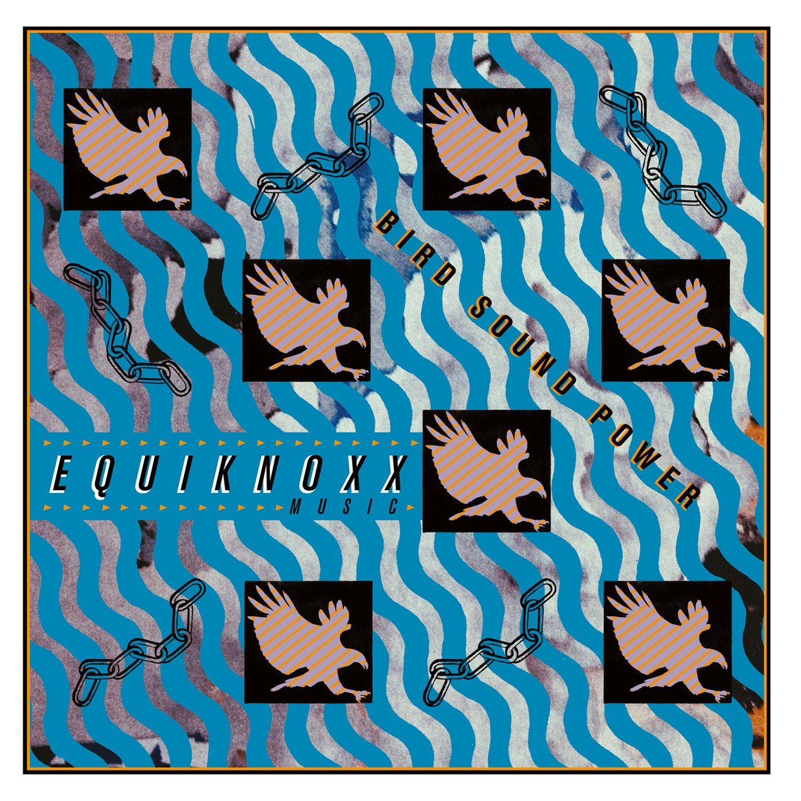
CRVI000030Equiknoxx - Bird Sound Power
Designed by Jon Kraus · DDS · 2016
Designed by Jon Kraus · DDS · 2016
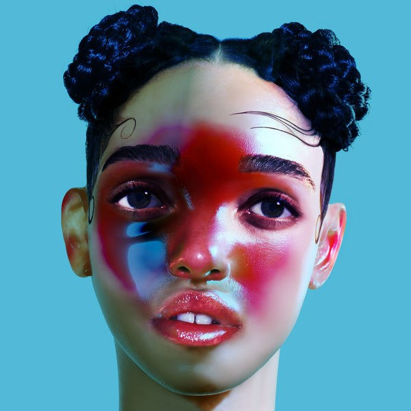
CRVI000015FKA Twigs - LP 1
Designed by FKA Twigs, Phil Lee · Young Turks · 2014
Designed by FKA Twigs, Phil Lee · Young Turks · 2014

CRVI000065Blank Banshee - Blank Banshee 0
Designer unknown · Hologram Bay · 2012
Designer unknown · Hologram Bay · 2012

CRVI000013Giant Claw - Dark Web
Artwork by Ellen Thomas, Keith Rankin · 2014
Artwork by Ellen Thomas, Keith Rankin · 2014

CRVI000103Visible Cloaks - Reassemblage
Designed by Will Work For Good · Rvng Intl. · 2017
Designed by Will Work For Good · Rvng Intl. · 2017

CRVI000023NxxxxxS - Fujita Scale
Artwork by Ivan Peev · Headcount Records · 2014
Artwork by Ivan Peev · Headcount Records · 2014

CRVI000024The Caretaker - An Empty Bliss Beyond This World
Artwork by Ivan Seal · History Always Favours The Winners · 2011
Artwork by Ivan Seal · History Always Favours The Winners · 2011

CRVI000090Michal Turtle - Phantoms Of Dreamland
Designer unknown · 2016
Designer unknown · 2016

CRVI000104Gábor Lázár - Crisis Of Representation
Artwork by Zsófia Boda · Shelter Press · 2017
Artwork by Zsófia Boda · Shelter Press · 2017

CRVI000005Rashad Becker - Traditional Music of Notional Species Vol. II
Artwork by Bill Kouligas · 2017
Artwork by Bill Kouligas · 2017

CRVI000086Macintosh Plus - フローラルの専門店
Designer unknown · Beer On The Rug · 2011
Designer unknown · Beer On The Rug · 2011

CRVI000215Youngblood Brass Band - Pax Volumi
Illustration by Timothy J. Reynolds · Tru Thoughts · 2013
Illustration by Timothy J. Reynolds · Tru Thoughts · 2013

CRVI000098Various - Midnite Spares
Designer unknown · Efficient Space · 2016
Designer unknown · Efficient Space · 2016

CRVI000001Paul Jebanasam - Rites
Designed by Alex Digard · 2013
Designed by Alex Digard · 2013
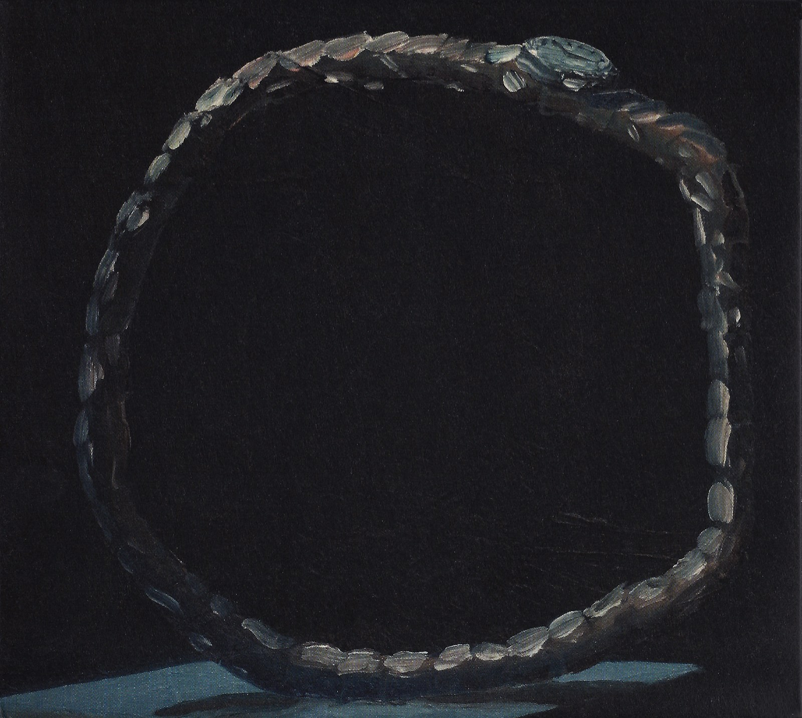
CRVI000084Leyland Kirby - Eager To Tear Apart The Stars
Designer unknown · History Always Favours The Winners · 2011
Designer unknown · History Always Favours The Winners · 2011
CRVI000046Demdike Stare - Voices Of Dust
Designed by Radu Prepeleac · 2010
Designed by Radu Prepeleac · 2010
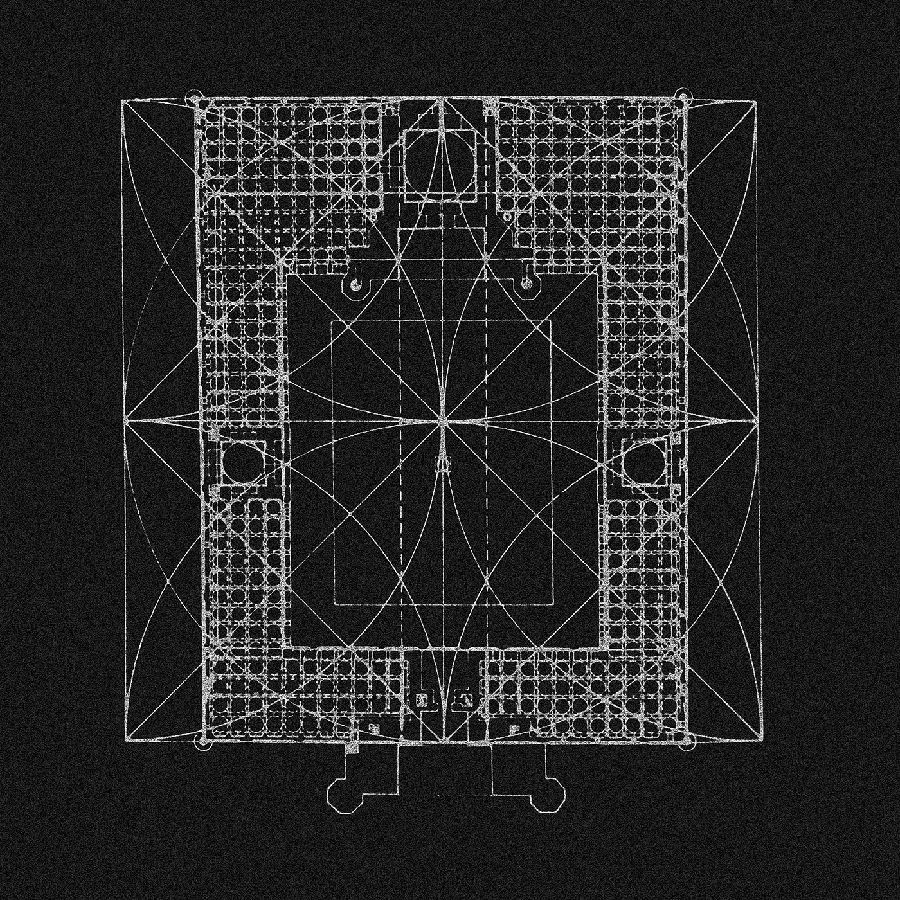
CRVI000002Sote - Architectonic
Artwork by Arash Bolouri · Morphine Records · 2014
Artwork by Arash Bolouri · Morphine Records · 2014
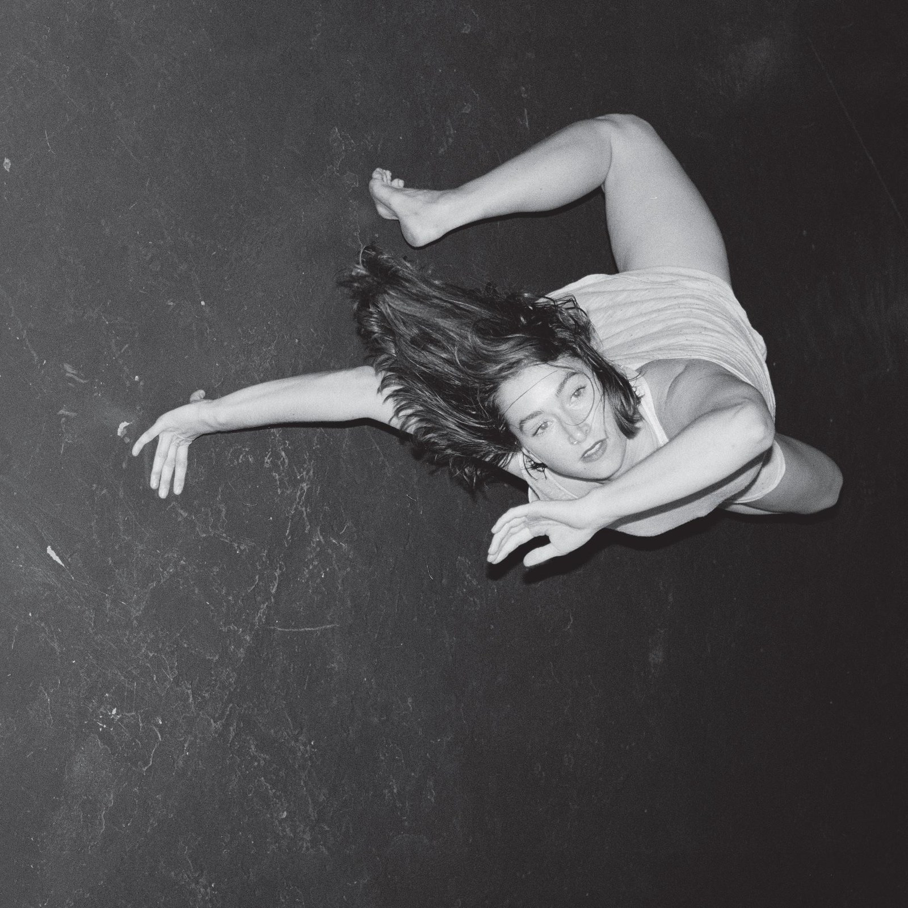
CRVI000043Raime - Quarter Turns Over A Living Line
Designed by Oliver Smith · 2012
Designed by Oliver Smith · 2012
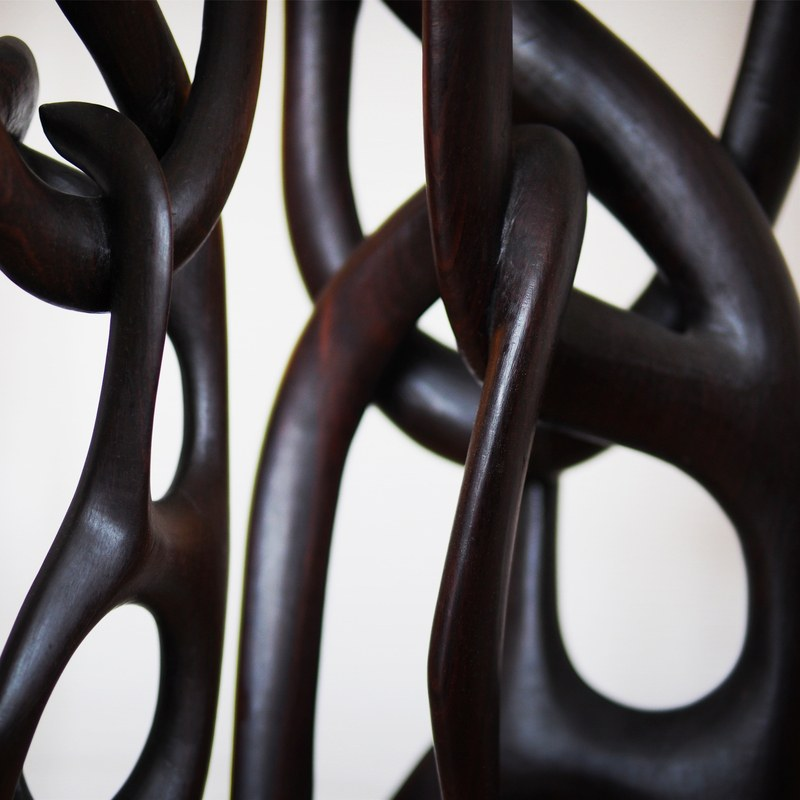
CRVI000080Karen Gwyer - Needs Continuum
Designer unknown · No Pain In Pop · 2013
Designer unknown · No Pain In Pop · 2013

CRVI000064Mouse On Mars - Dimensional People
Designer unknown · Thrill Jockey · 2018
Designer unknown · Thrill Jockey · 2018
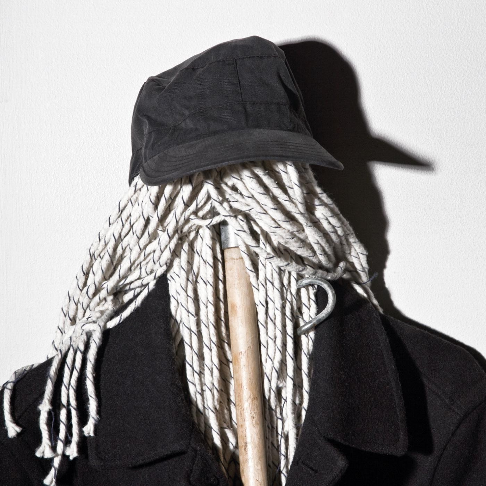
CRVI000028Pete Swanson - Man With Potential
Designed by John Twells, Radu Prepeleac · Type · 2011
Designed by John Twells, Radu Prepeleac · Type · 2011
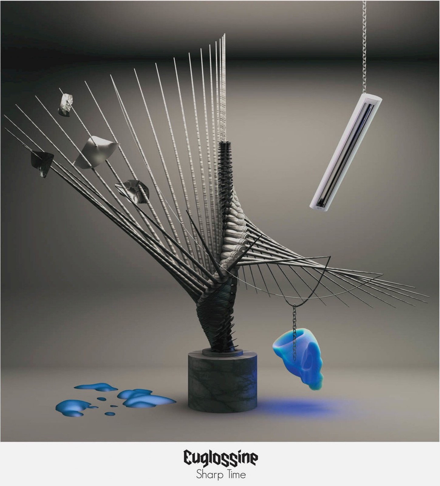
CRVI000072Euglossine - Sharp Time
Designer unknown · 2017
Designer unknown · 2017
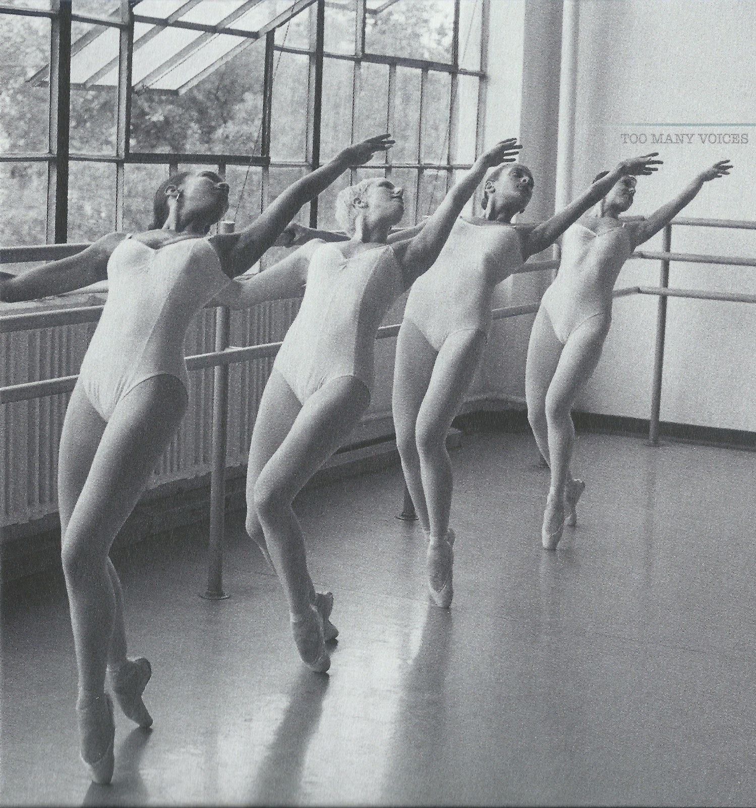
CRVI000033Andy Stott - Too Many Voices
Artwork by Julie Lemberger · 2016
Artwork by Julie Lemberger · 2016
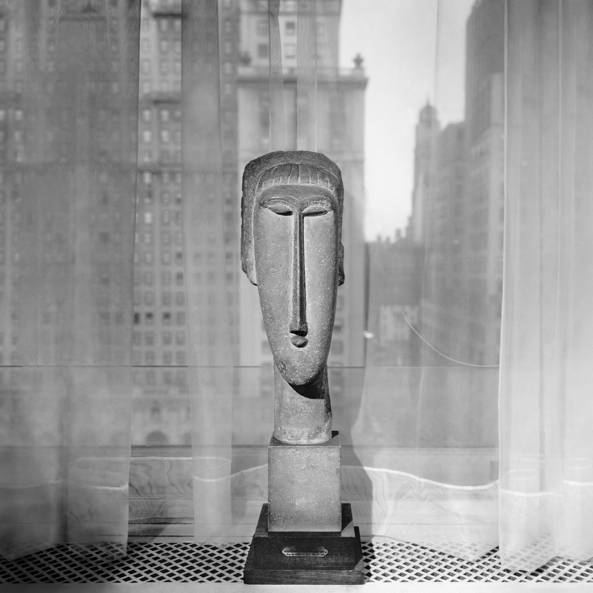
CRVI000020Andy Stott - Faith In Strangers
Artwork by Herbert Matter · 2014
Artwork by Herbert Matter · 2014

CRVI000063Actress - R.I.P
Designer unknown · Honest Jon's Records · 2012
Designer unknown · Honest Jon's Records · 2012

CRVI000102Actress - Splazsh
Designed by Will Bankhead · Honest Jon's Records · 2010
Designed by Will Bankhead · Honest Jon's Records · 2010
CRVI000004Laurel Halo - Chance Of Rain
Designed by Bill Kouligas · Hyperdub · 2013
Designed by Bill Kouligas · Hyperdub · 2013

CRVI000026Blessed Initiative - Blessed Initiative
Designed by John Coulthart · Subtext · 2016
Designed by John Coulthart · Subtext · 2016

CRVI000085Lussuria - American Babylon
Designer unknown · Hospital Productions · 2012
Designer unknown · Hospital Productions · 2012

CRVI000050Shackleton & Vengeance Tenfold - Sferic Ghost Transmits
Designed by Sandhya Ellis · Honest Jon's Records · 2017
Designed by Sandhya Ellis · Honest Jon's Records · 2017

CRVI000006Objekt - Flatland
Artwork by Bill Kouligas, Kathryn Politis, Traianos Pakioufakis · Pan · 2014
Artwork by Bill Kouligas, Kathryn Politis, Traianos Pakioufakis · Pan · 2014

CRVI000036Various - Close to the Noise Floor (Formative UK Electronica 1975-1984)
Designed by Lora Findlay · 2016
Designed by Lora Findlay · 2016